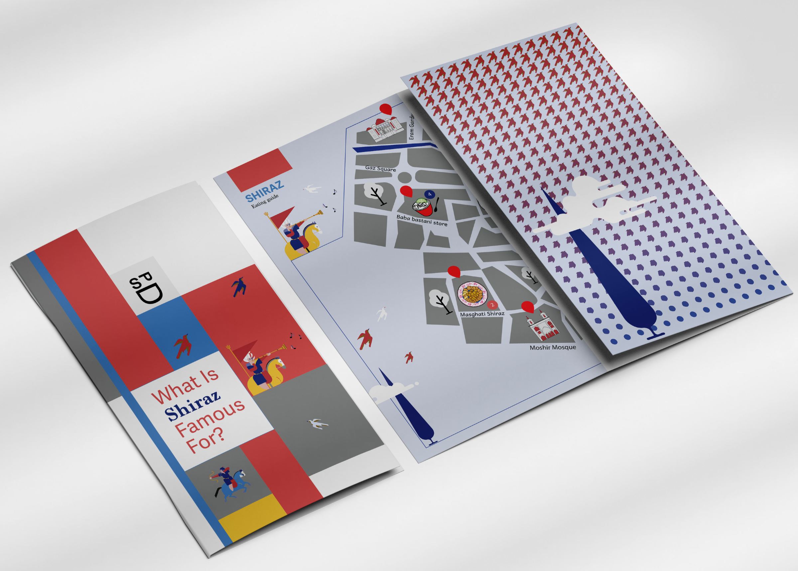
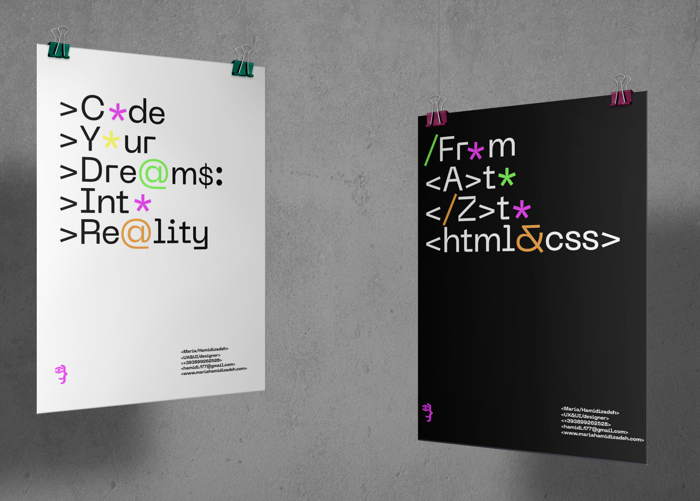
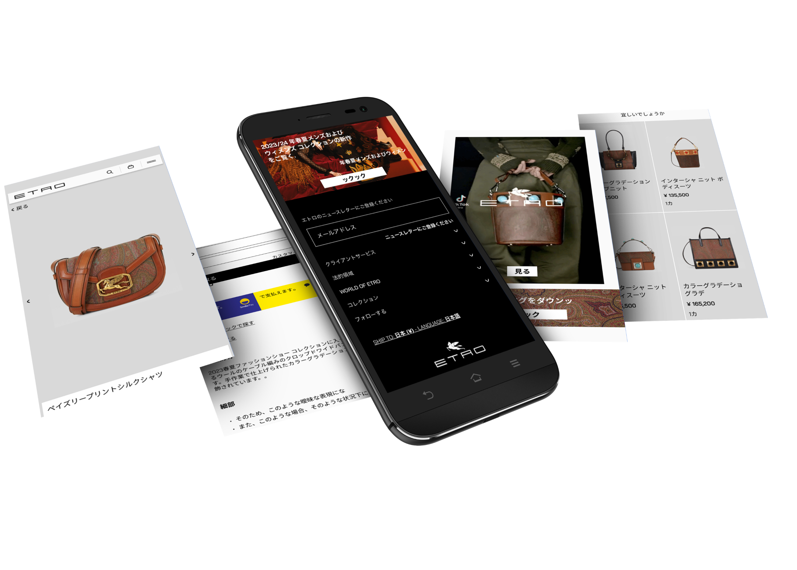
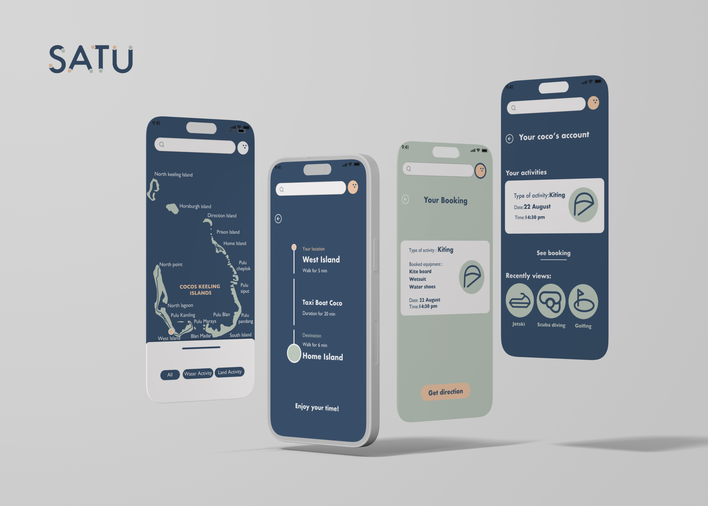

User experience design
Creating a new communication and visual identity that is inspired by coding language.”
Experience with research prototyping and wireframing
The Bosco interactive poster collection